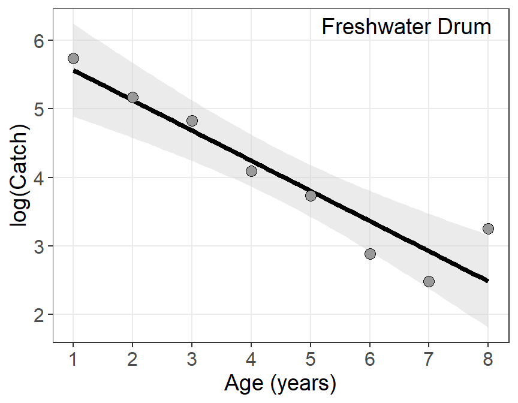

library(tidyverse)Introduction
I often struggle with “size” of ggplot objects. It has seemed that size= behaved differently in certain situations and was unrelated to linewidth=. I often just fiddle with the values until I get something that looks like I want. Dissatisfied with this approach, I explored the idea of “size” in ggplot2 further.
The rest of this post is split into two main sections. In the first, I describe a confusion that I had from reading the ggplot2 documentation with respect to the size of text, points, and lines. That section finishes with a summary of my findings with respect to this confusion, which is largely a summary of one answer I received on StackOverflow (as of 1-Apr-2023), and a possible solution which seems to address my confusion. In the second section, I discuss how to set the “size” for text, lines, and points, and what these sizes mean.
Aesthetic Specification Documentation
Aesthetic specifications are defined in this online documentation. Below I copied some of the text from that documentation as it appeared on 1-Apr-2023. Under linewidth the documentation reads:
Due to a historical error, the unit of linewidth is roughly 0.75 mm. Making it exactly 1 mm would change a very large number of existing plots, so we’re stuck with this mistake.
Under Font size the documentation reads:
The
sizeof text is measured in mm. This is unusual, but makes the size of text consistent with the size of lines and points. Typically you specify font size using points (or pt for short), where 1 pt = 0.35mm.ggplot2provides this conversion factor in the variable.pt, so if you want to draw 12pt text, setsize = 12 / .pt.
Under Colour and fill for points the documentation reads:
Note that shapes 21-24 have both stroke
colourand afill. The size of the filled part is controlled bysize, the size of the stroke is controlled bystroke. Each is measured in mm, and the total size of the point is the sum of the two.
My read of these portions of the documentation leads me to conclude that using the same value for linewidth= for a line and size= for a point and text should result in either (a) all three being the same size but scaled to approximately 0.75 mm rather than 1 mm or (b) the point and text being the same size and scaled to 1 mm and the line being smaller and scaled to 0.75 mm.
I tested these expectations with the plot below using a “base size” of 24 such that
- The gray text used
size=24ingeom_text(). - The blue-and-red point used
size=12andstroke=12ingeom_point(). - The orange point used
size=24andstroke=0ingeom_point(). - The green point used
size=0andstroke=24ingeom_point(). - The green-and-orange point use
size=12andstroke=12*0.7531 ingeom_point().
1 More about 0.753 later, but note that it is “roughly 0.75” from the documentation for linewidth= shown above.
From these choices and my interpretation of the documentation above, I expected the following:
- All but the green-and-orange point to be equally sized or the black line to be smaller than all but the green-and-orange point to which it would be equal in size.
- Regardless of the relation to the black line and the text, I expected all but the green-and-orange point to be equal in size.
Code
sz <- 24
cf <- .pt/.stroke
ggplot() +
geom_hline(yintercept=1,linewidth=sz) +
geom_text(data=data.frame(x=0.35,y=1,label="Text"),
mapping=aes(x=x,y=y,label=label),
size=sz,color="gray70") +
geom_point(data=data.frame(x=0.5,y=1),mapping=aes(x=x,y=y),
pch=21,size=sz/2,stroke=sz/2,fill="red",color="blue") +
geom_point(data=data.frame(x=0.6,y=1),mapping=aes(x=x,y=y),
pch=21,size=sz,stroke=0,fill="orange") +
geom_point(data=data.frame(x=0.7,y=1),mapping=aes(x=x,y=y),
pch=21,size=0,stroke=sz,color="green") +
geom_point(data=data.frame(x=0.8,y=1),mapping=aes(x=x,y=y),
pch=21,size=sz/2,stroke=sz/2*cf,fill="orange",color="green") +
scale_x_continuous(limit=c(0.275,0.85)) +
theme_void() +
theme(aspect.ratio=0.2)From this, it seems like an obvious issue is related to stroke=. Comparing the orange (only) to the green (only) point suggests that the size” of stroke= is larger than the size of size= such that size= plus stroke= does equal the overall size of the point, but not in a one-to-one way. For example, you can not reduce size= by some number of units and increase stroke= by the same number of units to have the same overall size of point. For example, each point below has the same sum of size= (first number, red fill) and stroke= (second number, blue).2
2 All overlaid on a line constructed with linewidth=24.
Code
## mostly from stefan in https://stackoverflow.com/a/75896754/1123933
tmp <- expand.grid(size=seq(0,30,3)*2,
stroke=seq(0,30,3)*2) |>
subset(size+stroke==sz)
ggplot(data=tmp,mapping=aes(x=size)) +
geom_hline(yintercept=1,linewidth=sz) +
geom_point(aes(y=1,stroke=stroke,size=size),shape=21,color="blue",fill="red") +
geom_text(mapping=aes(y=1,label=paste(size,stroke,sep=" / ")),
color="white",fontface="bold",size=11/.pt) +
scale_size_identity() +
scale_x_continuous(expand=expansion(mult=0.1)) +
theme_void() +
theme(aspect.ratio=0.2)I asked a question about all of this on Posit Community and on StackOverlow. While responses on both platforms ultimately did not clarify the issue above, one answer on StackOverflow was instructive. There, “Stefan” pointed out that size= is converted to pts with a constant built-in to ggplot2 as .pt and that stroke= is converted to pts with a constant built-in to ggplot2 as .stroke. These two conversion constants are different.
.pt#R| [1] 2.845276.stroke#R| [1] 3.779528Interestingly, their ratio is 0.753 which sounds like the “roughly 0.75” from the documentation about linewidth= above. “Stefan” went on to show in his StackOverflow answer that if you multiply the stroke value by the ratio of these two constants, which he called a “correction factor”, that the overall size of the point will follow my expectations. This is illustrated below where each point below has the same sum of size= (first number, orange fill) and stroke= times the correction factor (second number, green).
Code
## mostly from stefan in https://stackoverflow.com/a/75896754/1123933
ggplot(data=tmp,mapping=aes(x=size)) +
geom_hline(yintercept=1,linewidth=sz) +
geom_point(aes(y=1,stroke=stroke*cf,size=size),
shape=21,color="green",fill="orange") +
geom_text(mapping=aes(y=1,label=paste0(size," / ",stroke,"*cf")),
color="black",fontface="bold",size=11/.pt) +
scale_size_identity() +
scale_x_continuous(expand=expansion(mult=0.1)) +
theme_void() +
theme(aspect.ratio=0.2)From this it appears to me that size=, stroke=, and linewidth= will provide the same size for their respective objects if stroke= is multiplied by the “correction factor” derived from the ratio of .pt to .stroke.
It is worth noting at this point that this “issue” of the overall size of the point may be moot in most situations as the default size= is 1.5 and default stroke= is 0.5. Thus, the overall point will be larger than what would be expected for a size= plus stroke= of 2, but will likely not be perceptible to most eyes. That being said, you can always set stroke=0.5*.pt/*.stroke for default points to adjust for this issue.
Setting Sizes
Text
Default Sizes
Unless modified by the user, the default “base” font size in most ggplot2 themes is 11 pt, as shown below for theme_grey() (the default ggplot2 theme). This can be modified with base_size= to the theme function.
theme_grey()$text#R| List of 11
#R| $ family : chr ""
#R| $ face : chr "plain"
#R| $ colour : chr "black"
#R| $ size : num 11
#R| $ hjust : num 0.5
#R| $ vjust : num 0.5
#R| $ angle : num 0
#R| $ lineheight : num 0.9
#R| $ margin : 'margin' num [1:4] 0points 0points 0points 0points
#R| ..- attr(*, "unit")= int 8
#R| $ debug : logi FALSE
#R| $ inherit.blank: logi TRUE
#R| - attr(*, "class")= chr [1:2] "element_text" "element"Several of the default font sizes for other items are based off of this base size. For example, for most themes the axis titles are the base size, the plot title is 1.2× larger than the base size, and the axis tick labels and facet strip labels are 0.8× the base size.3
3 I chose not to show the code by default for some of these plots because the point demonstrated by the plot is the point, not the code. However, click “code” if you would like to see the code.
Code
pd <- ggplot() +
geom_point() +
scale_x_continuous(name="Base Font Size (11)",
limits=c(0,1),breaks=c(0,1),expand=expansion(add=0.5),
labels=rep("0.8X Base Font Size",2)) +
scale_y_continuous(name="Base Font Size (11)",
limits=c(0,1),breaks=c(0,1),expand=expansion(add=0.25),
labels=rep("0.8X Base Font Size",2)) +
ggtitle("1.2X Base Font Size")
pdText added to the plot with geom_text() is shown at the base font size by default.
Code
pd +
geom_text(data=data.frame(x=0.5,y=0.5,label="Text at Default Base Font Size"),
mapping=aes(x=x,y=y,label=label))Text Label Font Sizes
geom_text() has a size= argument for changing the size of the text. As such, you might change it to 13.2 assuming that its size would then match the size of plot title (i.e., 1.2×11).
Code
pd +
geom_text(data=data.frame(x=0.5,y=0.5,label="Text at 'size=13.2'"),
mapping=aes(x=x,y=y,label=label),size=13.2)This clearly did not meet expectations. Why? Because the units for size= is not pts, rather it is mm. In geom_text() those mm units get converted to pts for displaying the text. There are a little over 72 dots (or “pts”) per inch, which corresponds to approximately 2.835 dots per mm. Thus, size=13.2 sets the text size at approximately 13.2×2.835=37.4 pts. Thus, the very large text above.
This phenomenon is also evident in the default “size” used in geom_text() shown below. Note that 3.88×2.835=11.0 or, approximately, the 11 pt base font size.
GeomText$default_aes#R| Aesthetic mapping:
#R| * `colour` -> "black"
#R| * `size` -> 3.88
#R| * `angle` -> 0
#R| * `hjust` -> 0.5
#R| * `vjust` -> 0.5
#R| * `alpha` -> NA
#R| * `family` -> ""
#R| * `fontface` -> 1
#R| * `lineheight` -> 1.2The exact conversion factor from mm to pts is stored in the ggplot2 constant .pt.
.pt#R| [1] 2.845276Thus, to use size= in geom_text() to display text at a specific pt size, then divide the desired pt size by .pt. For example, the plot below uses size=11*1.2/.pt for the top text and size=16/.pt for the bottom text.
Code
pd +
geom_text(data=data.frame(x=c(0.5,0.5),y=c(0.75,0.25),
label=c("Text at 1.2X Base Font Size",
"Text at 16 pt Font Size")),
mapping=aes(x=x,y=y,label=label),size=c(11*1.2,16)/.pt)
Tip
Set the font size in geom_text() or geom_label() to a desired point size by setting size= to the desired point size divided by the ggplot2 constant in .pt. For example, use size=16/.pt to use a 16 pt font size.
The following “chart” gives an idea of how a particular size= will be converted to a pt size (on the left) and how a particular pt size corresponds to a size= value (on the right).
Code
dat2 <- data.frame(sz1=3:10,
pts2=c(6,8,10,11,12,14,18,24)) |>
dplyr::mutate(sz2=pts2/.pt,
pts1=sz1*.pt,
x1=rep(0,length(sz1)),
y=seq_along(sz1),
lbl1=glue::glue("size={sz1}; {round(pts1,1)} pt"),
x2=rep(1,length(sz2)),
lbl2=glue::glue("{pts2} pts; size={round(sz2,1)}"))
ggplot(data=dat2) +
geom_text(mapping=aes(x=x1,y=y,size=sz1,label=lbl1)) +
geom_text(mapping=aes(x=x2,y=y,size=sz2,label=lbl2)) +
geom_vline(xintercept=0.5,color="gray70") +
scale_size_identity() +
scale_x_continuous(expand=expansion(add=0.5)) +
theme_classic() +
theme(axis.title=element_blank(),axis.text=element_blank(),
axis.ticks=element_blank(),axis.line=element_blank(),
legend.position="none")Lines
Objects that are “lines” of some sort (see table below)5 all control their size or thickness with linewidth=. As noted in the first section, linewidth= is measured in mm but due to an historical error it actually scales to “roughly 0.75 mm.”6 The default linewidth for most geoms is 0.5, though some differ as shown below.7
5 There are still other geoms that use linewidth=.
6 The actual mm depends on the resolution of the display device.
7 These defaults come from, for example, GeomLine$default_aes.
Code
tmp <- data.frame(`geom_`=c("abline()","area()","bar()","boxplot()",
"col()","contour()","curve()","errorbar()"),
default=c(GeomAbline$default_aes$linewidth,
GeomArea$default_aes$linewidth,
GeomBar$default_aes$linewidth,
GeomBoxplot$default_aes$linewidth,
GeomCol$default_aes$linewidth,
GeomContour$default_aes$linewidth,
GeomCurve$default_aes$linewidth,
GeomErrorbar$default_aes$linewidth),
` `=rep(" ",8),
`geom_`=c("hline()","line()","path()","pointrange()",
"polygon()","segment()","smooth()","tile()"),
default=c(GeomHline$default_aes$linewidth,
GeomLine$default_aes$linewidth,
GeomPath$default_aes$linewidth,
GeomPointrange$default_aes$linewidth,
GeomPolygon$default_aes$linewidth,
GeomSegment$default_aes$linewidth,
GeomSmooth$default_aes$linewidth,
GeomTile$default_aes$linewidth),
check.names=FALSE)
tmp |> knitr::kable() |>
kableExtra::kable_styling(full_width=FALSE,
bootstrap_options=c("striped","hover")) |>
kableExtra::column_spec(3,width="4em")| geom_ | default | geom_ | default | |
|---|---|---|---|---|
| abline() | 0.5 | hline() | 0.5 | |
| area() | 0.5 | line() | 0.5 | |
| bar() | 0.5 | path() | 0.5 | |
| boxplot() | 0.5 | pointrange() | 0.5 | |
| col() | 0.5 | polygon() | 0.5 | |
| contour() | 0.5 | segment() | 0.5 | |
| curve() | 0.5 | smooth() | 1.0 | |
| errorbar() | 0.5 | tile() | 0.1 |
The display below gives an idea of the relative sizes of the different linewidth= values.8
8 The most common default linewidth is shown in red.
Code
dat1 <- data.frame(lw=c(0.1,0.25,0.5,0.75,1,1.5,2,3,4)) |>
dplyr::mutate(x=rep(0,length(lw)),
xend=rep(1,length(lw)),
y=seq_along(lw),
yend=y)
ggplot(data=dat1) +
geom_segment(mapping=aes(x=x,xend=xend,y=y,yend=yend,linewidth=lw)) +
scale_y_continuous(name="linewidth=",breaks=dat1$y,labels=dat1$lw) +
geom_segment(x=0,y=3,xend=1,yend=3,color="red") +
scale_x_continuous(expand=expansion(mult=0)) +
scale_linewidth_identity() +
theme_classic() +
theme(axis.title.x=element_blank(),axis.text.x=element_blank(),
axis.ticks=element_blank(),axis.line=element_blank(),
axis.title.y=element_text(size=14),axis.text.y=element_text(size=12),
legend.position="none")
Points
As alluded to in the first section, points consist of a size= “fill” portion and a stroke= “color” outline portion. As shown above, the total “size” of the point is the sum of the size= and stroke= value, though these values seem to be scaled differently. The size= portion of the point is scaled to the same as size= for text and linewidth= for lines. However, stroke= is scaled larger and, thus, you cannot “trade” values from scale= to stroke= to get the same size of point.
The default values for points are size=1.5 and stroke=0.5.9
9 Because of the small stroke= value, the issue discussed above is likely not going to be noticeable.
GeomPoint$default_aes#R| Aesthetic mapping:
#R| * `shape` -> 19
#R| * `colour` -> "black"
#R| * `size` -> 1.5
#R| * `fill` -> NA
#R| * `alpha` -> NA
#R| * `stroke` -> 0.5The following figure gives an idea of what different sizes look like for different shapes of “points.”10
10 The default stroke= of 0.5 was used.
Code
szs <- c(1,1.5,2,2.5,3,4,5)
dat4 <- tidyr::expand_grid(Size=szs,Shape=c(19,21,1,17,24,2,15,22,0)) |>
mutate(fShape=factor(Shape,levels=c(19,21,1,17,24,2,15,22,0)),
fSize=factor(Size))
stroke <- 0.5
ggplot(data=dat4,mapping=aes(x=fShape,y=fSize,size=Size,shape=Shape)) +
geom_hline(yintercept=seq_along(szs),linewidth=szs+stroke,color="gray90") +
geom_hline(yintercept=seq_along(szs),linewidth=szs,color="gray95") +
geom_point(fill="red",stroke=stroke) +
scale_size_identity() +
scale_shape_identity() +
scale_y_discrete(name="Size",expand=expansion(mult=0.1),breaks=szs) +
scale_x_discrete(name="Shape",expand=expansion(mult=0.1)) +
theme_bw() +
theme(axis.line=element_blank(),
axis.title=element_text(size=14),axis.text=element_text(size=12),
panel.grid.minor=element_blank(),
panel.border=element_blank())Examples
Scatterplot with Best-Fit Line
As an example, suppose that you have log-transformed catch-at-age data that looks like this.11
11 This is typical, though idealistic, catch curve data.
Code
set.seed(173)
dat <- data.frame(age=1:8) |>
mutate(catch=500*(1-0.4)^age+rnorm(8,sd=10),
catch=round(catch,0),
logcatch=log(catch))
dat#R| age catch logcatch
#R| 1 1 311 5.739793
#R| 2 2 176 5.170484
#R| 3 3 125 4.828314
#R| 4 4 60 4.094345
#R| 5 5 42 3.737670
#R| 6 6 18 2.890372
#R| 7 7 12 2.484907
#R| 8 8 26 3.258097And a simple “catch curve” plot is constructed that looks like this.
ggplot(data=dat,mapping=aes(x=age,y=logcatch)) +
geom_smooth(method=lm,color="black",fill="gray80") +
geom_point(shape=21,fill="gray60") +
scale_y_continuous(name="log(Catch)") +
scale_x_continuous(name="Age (years)",breaks=1:8) +
theme_bw() +
theme(panel.grid.minor=element_blank())However, suppose that you made the following changes to meet some (perhaps yours) requirements.
- Points that are twice as big (i.e.,
size=3rather than defaultsize=1.5). - A “best-fit” line that is 50% thicker (i.e.,
linewidth=1.5rather than defaultlinewidth=1). - Axis title labels that are 14 pt.
- Axis tick mark labels that are 12 pt.
- A species annotation label (in the upper-right corner) that uses 14 pt font.
ggplot(data=dat,mapping=aes(x=age,y=logcatch)) +
geom_smooth(method=lm,color="black",fill="gray80",linewidth=1.5) +
geom_point(shape=21,fill="gray60",size=3) +
scale_y_continuous(name="log(Catch)") +
scale_x_continuous(name="Age (years)",breaks=1:8) +
annotate(geom="text",label="Freshwater Drum",x=Inf,y=Inf,vjust=1.5,hjust=1.1,
size=14/.pt) +
theme_bw() +
theme(panel.grid.minor=element_blank(),
axis.title=element_text(size=14),
axis.text=element_text(size=12))
Bar Chart with Labels
Suppose these same data are presented as a bar chart without the fitted line.
ggplot(data=dat,mapping=aes(x=age,y=catch)) +
geom_col(fill="gray60",color="black") +
scale_y_continuous(name="Catch",expand=expansion(mult=c(0,0.1))) +
scale_x_continuous(name="Age (years)",breaks=1:8) +
theme_bw() +
theme(panel.grid.minor=element_blank())And further suppose that you want to make the same textual changes as above and …
- Borders of the bars two times heavier (i.e.,
linewidth=1rather than the defaultlinewidth=0.5). - Horizontal gridlines four times heavier (i.e.,
linewidth=2rather than the defaultlinewidth=0.5). - Numeric labels of the catch amount above each bar in 12 pt font.
ggplot(data=dat,mapping=aes(x=age,y=catch)) +
geom_col(fill="gray60",color="black",linewidth=1) +
geom_text(mapping=aes(label=catch),vjust=-0.5,size=12/.pt) +
scale_y_continuous(name="Catch",expand=expansion(mult=c(0,0.1))) +
scale_x_continuous(name="Age (years)",breaks=1:8) +
annotate(geom="text",label="Freshwater Drum",x=Inf,y=Inf,vjust=1.5,hjust=1.1,
size=14/.pt) +
theme_bw() +
theme(panel.grid.minor=element_blank(),
axis.title=element_text(size=14),
axis.text=element_text(size=12),
panel.grid.major.y=element_line(linewidth=2))
Reuse
Citation
BibTeX citation:
@online{h.ogle2023,
author = {Derek H. Ogle},
title = {How {Does} {Size} {Work} in Ggplot2},
date = {2023-04-03},
url = {https://fishr-core-team.github.io/fishR//blog/posts/2023-4-4_Size},
langid = {en}
}
For attribution, please cite this work as:
Derek H. Ogle. 2023, April 3. How Does Size Work in ggplot2. https://fishr-core-team.github.io/fishR//blog/posts/2023-4-4_Size.